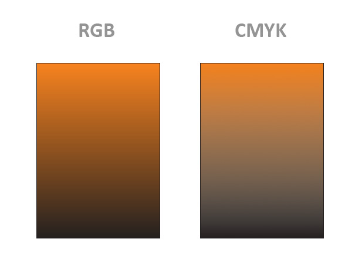

Сбор ошибок CorelDRAW версии 15.2.0.661
Sancho / 22.02.2010, 17:36/00:41
Форум:
Если вы нашли ошибку в CorelDRAW X5, расскажите о ней в этой теме, и если она подтвердится, то я обязательно сообщу о ней разработчикам.
Правила:
1. Обязательно указать операционную систему (XP, Vista, 7...).
2. Расписать поэтапно, как повторить ошибку.
Может, кто сталкивался с такой проблемой, а то что-то никаких мыслей не возникает по этому поводу. Да, кстати, настройки цвета перепробовал разные: не в них дело.
Система Windows XP Professional SP3.
После удаления у меня упрямо появляется параметр
HKEY_CURRENT_USER\Software\Corel\CorelDRAW\15.0\Draw\Application Preferences\ColorProfileMonitorMapping
При запуске с клавишей F8 настройки Корела сбрасываются, а окошко с выбром sRGB ни при каких условиях появляться не хочет.
Я, правда, пользуюсь Adobe Gamma Loader.
В общем, будем искать.
Спасибо за подсказки!
1. Если взять градиент Gray-CMYK-Gray то при экспорте PDF в режиме цветов native, весь градиент получается серым.
2. Каким вообще образом построена работа с градиентами, поскольку все виды растрирования и экспортивания дают вариант отличный от отображаемого на экране.
Кстати при печати подобной ошибки нет, т.к.
2. Я уже описывал как отображаются эффекты в Х5 в обзоре CorelDRAW X5

Страницы